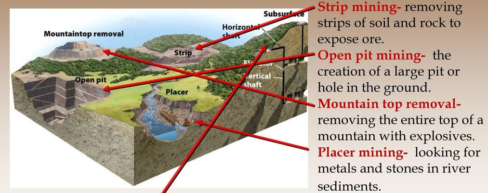
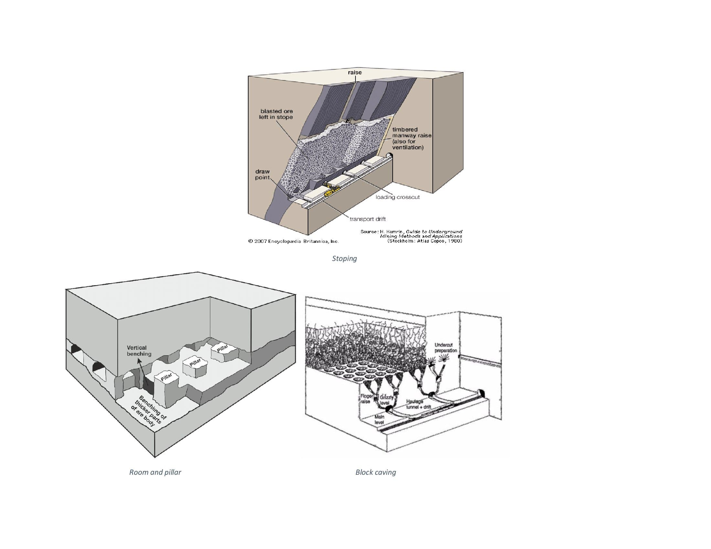
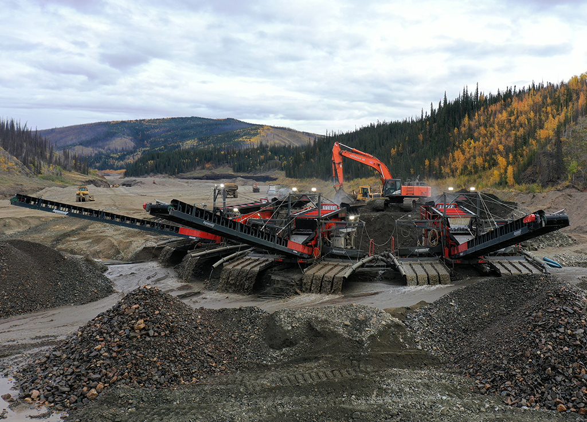
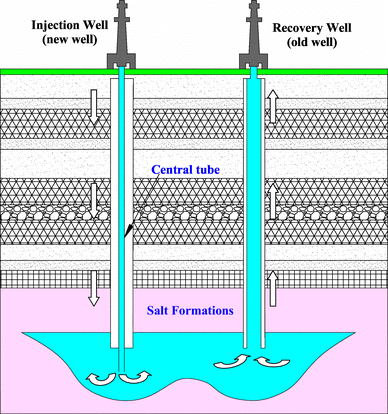

Introducion to Mining Techniques
A brief overview
Major mining methods
Surface Mining
Surface mining is a form of mining that entails the removal of soil and overlying rock from a mineral deposit. Since the beginning of the 20th century, this mining technique has acquired popularity, particularly in North America, where most surface mining occurs. Most forms of surface mining use heavy equipment, such as earthmovers, to eliminate the overburden while excavators extract the minerals. Generally, surface mining is conducted in five ways: strip mining, open-pit mining, mountaintop-removal mining, dredging, and highwall mining. Most of these approaches are shown in the figure below.
Strip mining involves extracting a mineral seam by first removing a long strip of overlaying soil and rock (the overburden). It is typically used to extract coal and lignite (brown coal). Open-pit mining is the extraction of minerals or rocks from the Earth through an open pit or borrow. Mountaintop removal mining (MTR) involves the extraction of coal seams beneath mountaintops. The peak is removed by breaking up rock layers above the seam with explosives. Dredging is a surface mining technique that uses small dredges to suction up mined material from the bottom of bodies of water such as oceans, lakes, and rivers. Lastly, highwall mining is used to recover more coal near a surface-mined region. A remotely controlled continuous miner usually excavates the coal seam and conveys the cut coal through conveyors outside.
Underground Mining
Underground mining is a type of mining in which ore is extracted from beneath the earth's surface. A horizontal or vertical tunnel (adit, shaft, or decline) provides access from the earth's surface to an underground mine. This method is utilized when the ore body is too deep to be mined successfully by open-pit or when the ore body's quality is high enough to offset the costs. Common approaches in this method include room and pillar mining, stoping, and block caving, as shown in the figure below.
Room and pillar mining involves mining isolated seams of coal while leaving giant coal pillars intact to support the surrounding rock layers. This mining results in a network of alternating open spaces and huge coal pillars. Stopping is a mining technique that is usually utilized for underground mining of ore deposits that are vertical or steeply sloping. It entails extracting ore by excavating massive underground voids or stopes inside the deposit. Lastly, block caving is a technique that enables the extraction of vast, low-grade deposits. This technique entails undermining the orebody to cause it to collapse under its own weight into a series of compartments from which the ore is extracted.
Placer Mining
Placer mining is a process of extracting precious metals from placer or alluvial deposits by using water. Placer deposits include gold-bearing sands and gravel that have settled from fast-moving streams to slower, more stable currents. This approach takes advantage of gold's high density, which causes it to sink considerably faster in running water. An excellent example of large scale placer mining is shown in the picture below.
Placer mining is undertaken either through panning or dredging. Panning uses a pan with lots of water and a few handfuls of gold-bearing soil or gravel. Swirling the pan washes the lighter material over the side, leaving the gold and gravel behind. Due to its low cost and simplicity, this ancient gold extraction technology is still used today. On the other hand, dredging uses equipment with continuously rotating buckets around a ladder that suck and scoop the placer minerals and transport them for separation and processing.
Solution Mining
Solution mining is the extraction of ore using a dissolution process, in which a solvent is pumped through the ore, the solvent dissolves the ingredient of interest, and the resulting liquid, known as the solute or pregnant liquor, is recovered and processed. This technology can be applied to in-situ deposits by borehole mining or to mined material via heap leaching. In-situ means "in-place," which implies that we extract, i.e., dissolve, the material of interest within the deposit while leaving the waste minerals behind. The advantage of solution mining is that it does not disrupt the surface with mining operations. However, the method can be hazardous if the solvent or solute migrates into the surrounding environment. A classic solution mining arrangement is shown below.

Genius is the gold in the mine, talent is the miner who works and brings it out.
— Marguerite Gardiner, Countess of Blessington